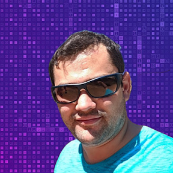

Sobre

Marcos Oleniuk
Apaixonado por tecnologia desde a infância, desenvolvedor Java Backend, com experiência em projetos Front-end e Back-end.
Formação
Unicesumar – Engenharia de Software (Superior Cursando)
FEITEP - Programação Java (Completo)